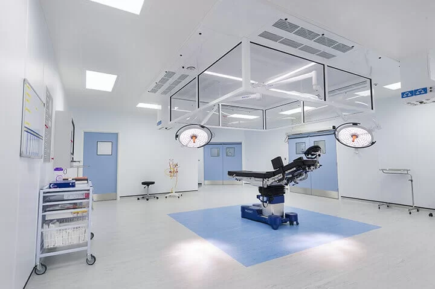
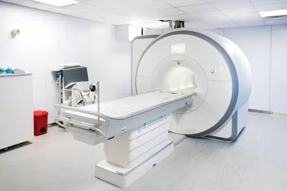
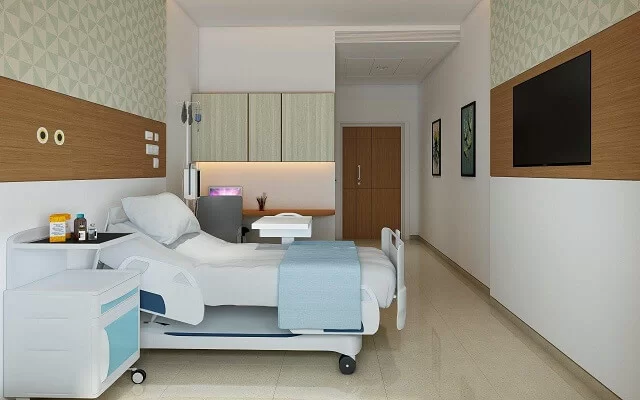

"We had taken a great initiative to start a new hospital with German collaboration. To bridge gap between India and advanced countries like Germany by forming a collaboration with Germany for technology sharing. Also to make such advanced technologies available at cost effective rates."

DR. MIR JAWAD ZAR KHAN
MBBS, MS-(ORTHO), M.CH-(ORTHO)
FELLOWSHIP IN ARTHOPLASTY (GERMANY)
ORTHOPEDIST, JOINT REPLACEMENT SURGEON, SPINE SURGEON
25 YEARS EXPERIENCE



Best Orthopedic Hospital in Hyderabad
Germanten Hospital, established by Dr. Mir Jawad Zar Khan in Hyderabad, India is a Advanced Orthopedic & multispeciality hospital with fully furnished sophisticated equipment. Dr Mir Jawad has strived hard to bring the recognition and fame it has gained today. The hospital was found with the vision and mission to offer world class orthopaedic treatment to patients suffering from severe knee, joint and spine problems.
Dr. Mir Jawad Zar Khan who is the Chairman and Managing Director has gained immense recognition as a joint replacement surgeon in India & Abroad. With almost a two-decade experience, Dr.Jawad Khan is one of the top surgeons currently working in Orthopedics and Join Replacement Surgeon in Hyderabad. Having worked with world-renowned surgeons in Munich, Germany, Dr.Jawad has been an expert in Computer Navigated Hip & Joint Replacement Surgery right from his heydays in Germany.
Dr.Jawad Khan is a classic success story of talent and hard work which met their due success. A brilliant student throughout his academic career, Dr.Jawad Khan has no dearth of role models in his family.Hailing from a family of respected Doctors his father Dr. Amanullah Khan was a Medical Stalwart who went on to become the Commissioner of Vaidhya Vidhana Parishad for the combined state of Andhra Pradesh and Telangana. Having finished his post graduation from Osmania University, with a gold medal for highest marks in the Andhra Pradesh State, Dr, Jawad had successfully completed the much coveted M.Ch Orthopedics from Usaim, Seychelles.USA. Following an advanced training in Joint Replacements under International experts in prestigious Lilavati and Max hospitals, he went to secure a fellowship in Arthroplasty that presented him an opportunity work in world-renowned Orthopedic Institute in Munich Germany.
Awards and Recognitions
Dr.Mir Jawad Zar Khan has been listed among Indias Top Orthopaedic Doctors in leading healthcare magazines in india and internationally. A devout medical researcher, Dr.Jawad has presented numerous research papers & articles in highly acclaimed journals around the world. He is currently an active member of prestigious medical associations that include:
- • Indo-German Orthopedic Foundation
- • Internationale De Chirurgie Orthopedic Et De Traumatologie (SICOT)
- • International Society For Orthopedic Surgery & Traumatology
- • International Cartilage Research Society International Society For Knowledge For Surgeons On Arthroscopy & Arthroplasty
- • International Society Of Arthroscopy, Knee Surgery And Orthopedic Sports Medicine
- • Indian Orthopedic Association
- • Orthopedic Surgeons Society Of A.P
- • Indian Medical Association (IMA)
- • Indian Arthroplasty Association
With so many laurels to his name, Dr.Mir Jawad Zar khan has been a vehement supporter of affordable medical care for the general public. It was this strong vision that culminated in the set-up of Germanten Hospitals where he finds himself at home employing his extensive experience in diagnosing orthopedic conditions for the general public at a cost-effective price. Dr.Jawad and his team work in tandem to provide best possible medical care the fastest recovery at an affordable price.
Dr. jawad is recipient of many national and international awards. Due to his outstanding services in the field of joint replacement surgeries he has been felicitated by H.E Andrew Flemings,British Deputy High Commissioner, Shri.K.Rosiayyah Ex chief Minister of Andhra Pradesh and many other prominent personalities have conferred awards to him. Dr.Jawad has been listed as one of India's Top Orthopedic Doctors along with other Top Orthopaedic Doctors from all states in India in coffee table book published by medgate today magazine which was launched by shri Ashwini Kumar Choubey Minister of State for health and Family Welfare Govt.of India on 21st feb 2019 in Delhi.
- • Dr. Mir Jawad Zar Khan, Chairman & Managing Director of Germanten Hospitals is honored with "Champions Of Change Award" by the Hon'ble 14th President of India Shri Ram Nath Kovind on 26th Feb '23 at Vignan Bhavan, New Delhi.
- • Honored with the Pride of the Nation Award 2024 on December 21, 2024, presented by Shri Jishnu Dev Varma, Honourable Governor of Telangana.
- • Insights Success Magazine Features Germanten Hospital As India's Most Trusted Orthopedic Treatment Centers-2022.
- • Times all India Orthopedic Hospital Ranking Survey -2022, Germanten Hospitals secure a position among the Top 20 orthopedic hospitals in India, the Top 10 in South India & Top 3 in Hyderabad.
- • Dr. Mir Jawad Zar Khan, Senior Orthopaedic Surgeon and Chairman of Germanten Hospitals Hyderabad received Times of India Award of "Iconic Joint Replacement Surgeon Of Telangana" by the State Hon'ble Governor Dr. Tamilisai Soundarajan on 6th Dec 2022.
Vision
Our vision is to be a renowned provider of medical care by leveraging exceptional services in Orthopedics.
Our Mission
To be a global provider in joint replacement & orthopedic services by delivering quality healthcare at an affordable price.
Our Values
We strive to meet patient expectations by maintaining the highest standards of service and medical ethics.
Frequently Asked Questions
Everything you need to know about Germanten Hospital
Germanten Hospital is consistently ranked among the best orthopedic hospitals in Hyderabad due to its cutting-edge surgical expertise, German-imported technology, internationally trained orthopedic surgeons, and high success rates in joint replacements, spine procedures, and trauma care.
We provide Advanced orthopedic treatments, including:
- • Total Knee & Hip Replacement
- • Arthroscopic (Keyhole) Surgeries
- • Sports Injury Medicine
- • Spine Surgery
- • Trauma Care
- • Pediatric Orthopedics
- • Physiotherapy & Post-Surgical Rehabilitation
- • Non Surgical Orthopedic Treatments
Dr. Mir Jawad Zar Khan is a renowned orthopaedic and joint replacement surgeon with over 25 years of experience in the field. He is the founder of Germanten Hospital and serves as Chairman and Managing Director, introducing advanced, minimally invasive orthopaedic procedures in Hyderabad.
Absolutely. We utilize German precision systems, 3D computer navigation, minimally invasive methods, and robotic-assisted surgery to ensure highly accurate, safe, and faster recovery outcomes.
Yes. Germanten Hospital has a dedicated international patient care team that offers travel assistance, visa coordination, accommodation, language interpreters, and personalized treatment planning, making us a preferred orthopedic destination in Hyderabad.
We take pride in our consistently high success rates for knee, hip, and spine surgeries, supported by our expert surgical teams, modern facilities, and comprehensive post-operative care protocols.
Yes. We are affiliated with all major insurance companies and offer cashless hospitalization facilities. Our finance team ensures smooth insurance processing and assistance.
Germanten Hospital is situated in Attapur, Hyderabad, allowing easy access from all parts of the city, including Rajiv Gandhi International Airport.
To schedule your consultation, please call us at 9989635555 or visit www.drjawadortho.com for online appointments.
Germanten Hospital is NABH-accredited and has received honors from Times of India and other leading institutions for its orthopedic excellence. Under the leadership of Dr. Mir Jawad Zar Khan, our hospital combines world-class infrastructure, expert care, and innovation to achieve superior outcomes in orthopedic and joint care.